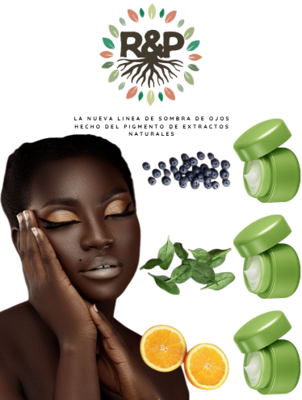

Marca: Raíz y Pigmento
Categoría: Diseño de Marca y Mockups
Descripción del Proyecto
Desarrollo de la identidad visual para la marca Raíz y Pigmento. El proyecto consistió en la creación de conceptos visuales y la aplicación del logotipo en diferentes mockups de productos, utilizando paletas de colores que transmiten tranquilidad y armonía.
Galería

Mockup promocionales de labiales de mi empresa con pigmento natural

Mockup promocional de cremas para la piel con diferentes ingredientes naturales